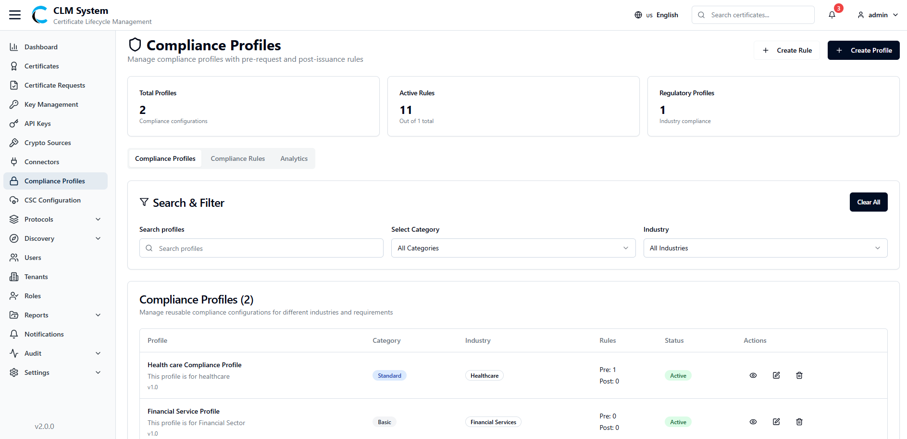
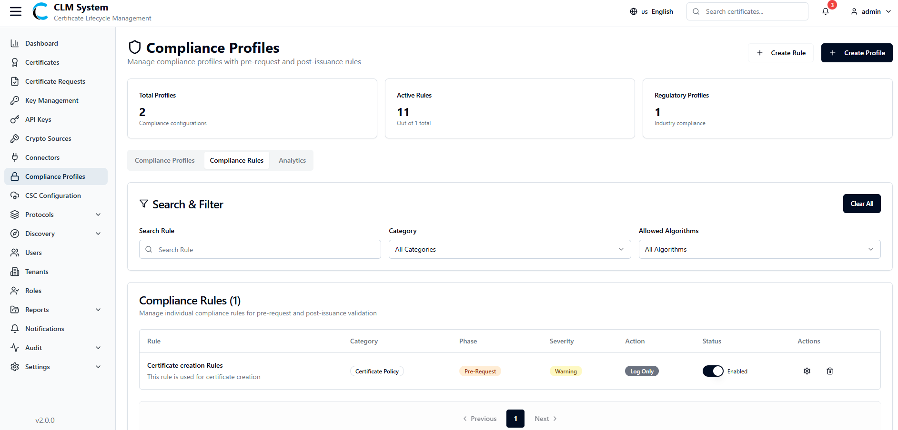
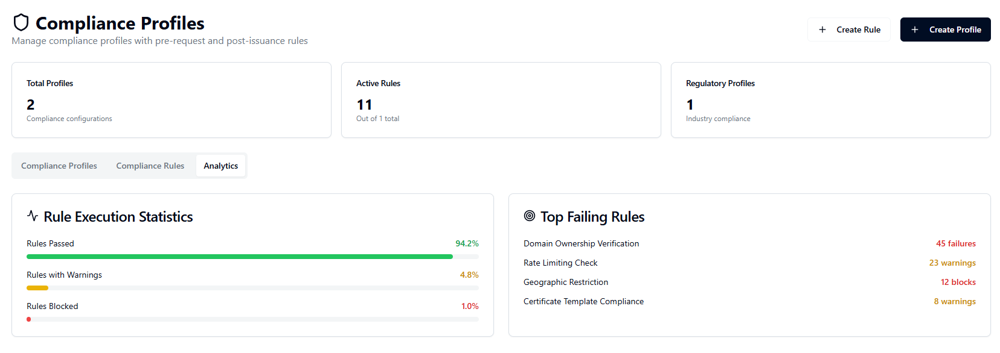
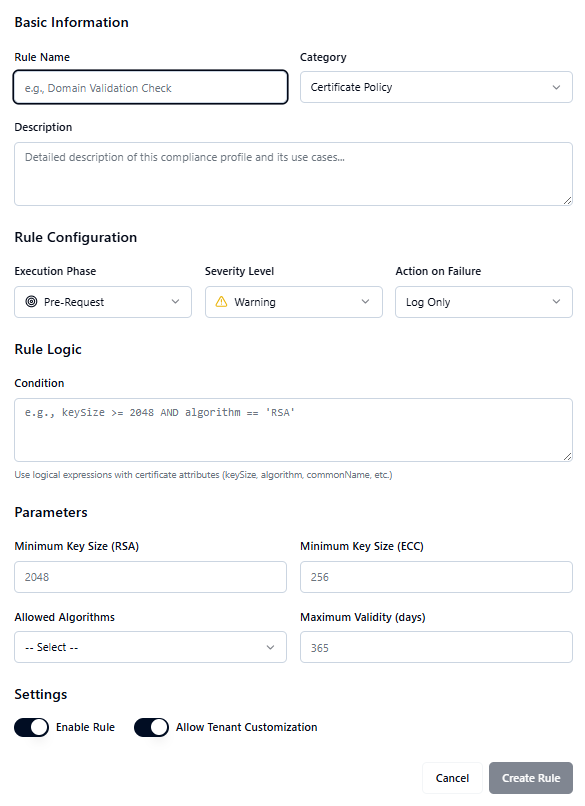

Managing Compliance Profiles
View and manage compliance profiles with pre-request and post-issuance rules.
In the sidebar, navigating to Compliance Profiles under the Compliance tab, the admin can see the following metrics displayed in cards on top:
-
Total Profiles
-
Active Rules
-
Regulatory Profiles
Below the cards, there are three tabs:
-
Compliance Profiles
-
Search and filter section where the user can search Compliance Profiles and apply filters.
-
A list of all Compliance Profiles is displayed below the search section.
-

-
Compliance Rules
-
Search and filter section where the user can search Compliance Rules and apply filters.
-
A list of all Compliance Rules is displayed below the search section. 
-
-
Analytics
-
A graph showing Rule Execution Statistics with percentages for:
-
Rules Passed
-
Rules with Warnings
-
Rules Blocked
-
-
Top Failing Rules are displayed with execution statistics for deeper insights. 
-
Creating a Compliance Rule
In the Compliance Profiles screen, click the Create Rule button located at the top-right corner. A Create Rule form will open, allowing administrators to define rule details, configuration, and logic.

Basic Information
-
Rule Name – Enter a unique name for the compliance rule.
-
Category – Select or define the category (e.g., Key Policy, Algorithm Policy).
-
Description – Provide a brief explanation of the rule.
Rule Configuration
-
Execution Phase (Dropdown) – Choose when the rule should apply: Pre-Request or Post-Issuance.
-
Severity Level (Dropdown) – Define the severity: Warning, Blocking, or Informational.
-
Action on Failure (Dropdown) – Specify the system action if the rule fails:
-
Log Only
-
Deny Request
-
Approve with Warning
-
Send Notification
-
Rule Logic
-
Condition – Define logical expressions using certificate attributes (e.g., keySize > 2048, algorithm = RSA, commonName != null).
-
Parameters:
-
Minimum Key Size (RSA) – Define minimum RSA key size.
-
Minimum Key Size (ECC) – Define minimum ECC key size.
-
Allowed Algorithms – Choose allowed algorithms (RSA, ECDSA).
-
Maximum Validity (days) – Set the maximum certificate validity period.
-
Create Rule
Once all required details are filled, click Create Rule to save the compliance rule.
Creating a Compliance Profile
In the Compliance Profiles screen, click the Create Profile button located at the top-right corner. A Create Profile form will open, allowing administrators to configure compliance profiles with pre-request and post-issuance rules.

Basic Information
-
Profile Name – Enter a unique name for the compliance profile.
-
Passing Score – Set the minimum score required for a certificate to be considered compliant.
-
Description – Provide a brief explanation of the compliance profile.
Pre-Request Rules
-
Displays a list of available pre-request rules.
-
Administrators can enable or disable each rule using a toggle switch.
Post-Issuance Rules
-
Displays a list of available post-issuance rules.
-
Administrators can enable or disable each rule using a toggle switch.
Profile Summary
-
Pre-Request Rules – Shows the number of pre-request rules enabled.
-
Post-Issuance Rules – Shows the number of post-issuance rules enabled.
Create Profile
After configuring the profile, click Create Profile to save it. The new compliance profile will then appear in the Compliance Profiles list.